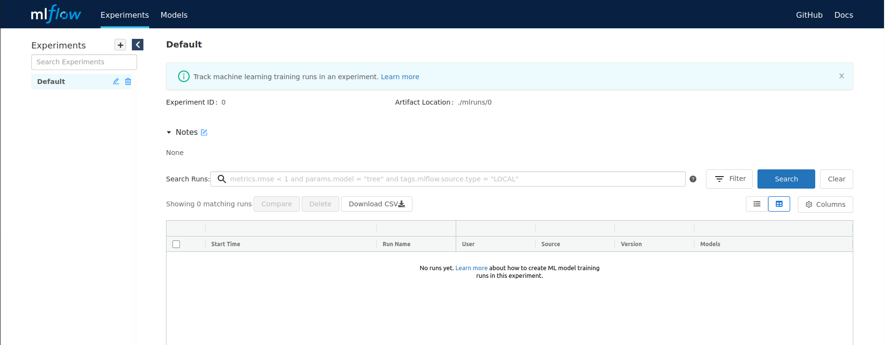
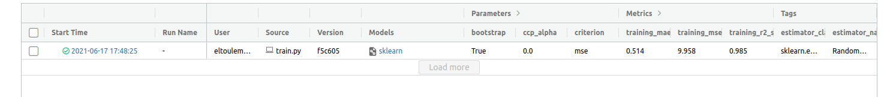
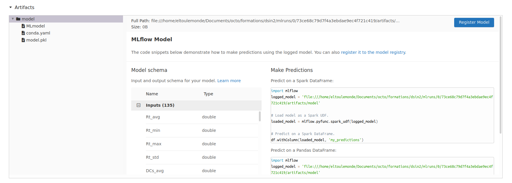

Pour ce TP, utiliser la branch 6_starting_mlflow
git checkout 6_starting_mlflow
Depuis l'interface de jupyterhub vous pouvez cliquer sur l'icon MLFLow pour lancer MLFlow qui va s'ouvrir dans un nouvel onglet.

Pour logger le résultat des expérimentations dans MLFlow tracking il faut ajouter un peu de code sur le code d'entraînement.
import mlflow
...
with mlflow.start_run() as run:
mlflow.sklearn.autolog()
model = ...
model.fit(X, y)
Une fois que vous avez intégré ce code, vous pouvez retourner dans l'interface airflow et trigger un entraînement.
Actualiser la page de MLFlow pour voir les runs apparaître

Vous pouvez voir l'ensemble des paramètres et métriques stockées.
Ensuite en cliquant sur le run, vous pouvez aller voir plus de détail et en descendant voir l'artefact généré

En fait MLFlow est basé sur un système de dossier / fichiers plats qui contiennent tout ce que l'on vient de voir. En plus de cela, MLFlow se sert d'une base de donnée local pour stocker les metadata liés aux runs
Vous pouvez parcourir les metadata en explorant le fichier mlflow.db à la racine
sqlite3 mlflow.db
Listez les tables avec commande
.tables
ou faire une requête SQL qui liste toutes vos experimentations
SELECT * FROM experiments;
ou encore, lister toutes vos metrics
SELECT * FROM metrics;
mlflow.sklearn.log_model pour que celui ci apparaisse dans la Model Registry/home/jovyan/mlruns/0 pour voir vos artefacts organisés par run